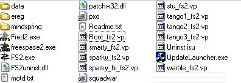
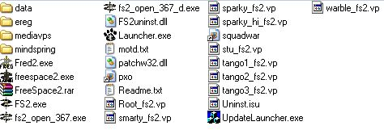
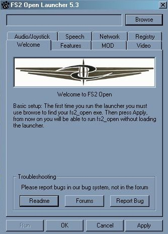
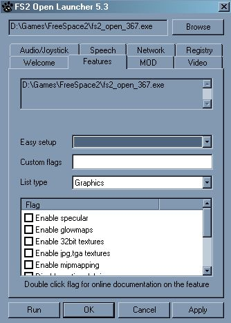

|
|
|
Installing FS2_OpenI've got a previously installed copy of FS2 and I want to install FS2_Open.
I've got a previously installed copy of FS2 and I want to install FS2_Open.Possibly the worst position to be coming at this from. First thing to do is to check that your FS2 install is in a suitable place to follow the rest of this guide. If your Freespace2 folder is on a path that contains a space or a hyphen in it (like C:\Program Files\Games for instance) you should drag the entire Freespace2 folder to somewhere that doesn't have either.If you've never installed any mods of any kind you can proceed to the FS2_Open installation section below. If you have installed any mods you need to stop now and remove them right now. Installing FS2_Open on top of a modded install is probably one of the biggest sources of user-created problems when installing FS2_Open. You can be saved from the hassle if you follow these steps. 
Finally You can now follow the instructions below. I've just installed FS2 and I want to install FS2_Open.If you haven't already run the FS launcher and click the update button. Ensure you have the 1.2 patch installed before going any further. If you've just installed FS2 following the guide on the previous page you'll have already done this.What do I need?There are four main components that you need to get the most out of FS2_Open.
Getting the launcherIn general you will want the latest version of the launcher. The launcher should be extracted to your main FreeSpace 2 folder. The launcher is available from the SCP website. The launcher is only absolutely required the first time you run FS2_Open, however its features make it advisable that you put a shortcut to the launcher on your desktop rather than to the build itself and always run via the launcher.Choosing a buildOfficial ReleasesThe SCP release official builds a few times a year. You can recognise these by the version number 3.5, 3.6.1, 3.6.7 etc. Historically the official builds have been released following a period of bug fixing and are supposed to be stable. In practice minor bugs have had a habit of creeping in and spoiling that. As with the launcher check the official SCP website Recent\CVS Builds Debug vs Release builds All builds should be extracted to your main FreeSpace 2 folder. Selecting your Media VPsThe media VP files are a set of package files (similar to .zip or .rar files but uncompressed) containing data which can be used by FS2_Open. The filenames always start with "mv_" making them easy to recognise.The first thing to realise about them is that all media VP files are optional. FS2_Open should work without the presence of any of them. Since the VPs are mostly graphical enhancements they will slow the speed FS2 runs at. The point of the media VPs is to make FS2_Open look like a modern game. If your PC is slow when running modern games it will most likely be slow when using all the media VPs. Most reported problems with choppy gameplay are generally due to people expecting too much from their computers and installing all the VPs. By all means try the game with all of them at first. Just be prepared to have to remove the more graphically intensive ones if you have a problem. Like the official builds the media VPs are also version numbered. This makes it easier to make sure you get the right ones. When using the official releases the golden rule is to always use the media VPs with the same version number (i.e 3.6.7 VPs with the 3.6.7 build etc) unless the thread or site you are getting them from specifically states that they will work with your official build. Media VPs are usually backwards compatible but on a few occasions using say the 3.6.5 VPs might break the official 3.6.7 release build. Such cases are rare but why not eliminate them completely and get the most up to date (and therefore best looking) version that is compatible with your build? You can find the Media VPs on the SCP website. Once you've downloaded the VP files it's time to install them. Many guides will tell you to simply dump the media VPs in your FS2 folder but quite frankly this will most likely cause you problems in the long run. If you take a minute longer and follow the advice given here you can avoid a lot of problems.
Whatever you do don't delete the original FreeSpace VPs. Quite often people assume that they are no longer needed and delete them only to find the game doesn't run as a result. Getting hold of the cutscenesDue to unfortunate licensing agreements the code for playing the .mve movies that retail uses was ripped out of the source code before it was given to the community. You'll have to get hold of replacements (usually in .avi format). Information on how to do that is given in my Cutscenes section.Once you have them the cutscenes go anywhere that FS2 can find them. This can be in your main folder, Data, Data\Movies, or even the mediavps folder you created earlier. Freespace2\Data is probably a good choice. Running the launcherAt this point your Freespace2 folder should look something like this (The build you're using will probably be different though).
All that remains is to run the SCP launcher and configure.
 Basic setupFirst thing to do is to click on the "Browse..." button at the top of the Launcher and select the build you installed.Next, ensure that the "Audio/Joystick" and "Network" tabs have the proper settings. (If you have trouble with your joystick not working properly in FS2_Open, you may try the "Force 0" or "Force 1" options, which will force FS2_Open to use the first or second joysticks, respectively. Speech setupIf you are using Windows XP, or have the Speech API installed, FS2_Open will be able to read briefings, techroom descriptions, and even in game messages to you using computer-generated voices. Although no match for real voice acting, it is convenient when valid plot points are mentioned in the middle of combat. Speech in the various locations can be turned on and off by checking and unchecking the check boxes; you can choose which of the installed voices to use in FS2_Open by changing the drop-down menu.Video setupOn the "Video" tab, you can choose which API to use (OpenGL or Direct3D), what resolution to run in, and whether to use anti-aliasing (Multisampling) or not."Allow non standard modes" will let you choose resolutions other than 1024x768 and 640x480. There may be some small graphics alignment errors, but these are generally small and virtually unnoticeable.  Features setupThis tab is where most of FS2_Open's options can be toggled on and off. At the top is a readout of your current command line. You should include this if you ever need to report an error wtih FS2_Open."Easy setup" basically allows you to turn lots of features on or off at once. Generally most people use it and then fine tune the settings immediately afterwards. "Custom flags" allows you to add any command line flags that don't show up in the Launcher. This may be because they require additional arguments, as is the case with the "-fov" command line argument (for more information, you can see the Command Line Flags page of the wiki). For now though we'll just leave this bit blank. Mod SettingsNow you might be thinking you haven't got any mods installed so you don't need to fiddle with this. You'd be wrong however. We installed the media VPs in such a way that FS2 will treat them as a mod. So click on Select Mod and choose the mediavps folder that you picked earlier.The reason that we installed the media VPs as a mod is that if FS2_Open doesn't work you can click the no MOD button and run without them and check whether the problem is with the build or the media VPs. It also means that you can still run retail FS2 if you want to. Now you're done. Click run and have fun playing on FS2_Open. |